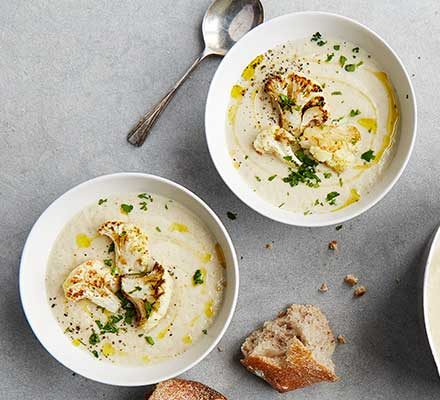

Cauliflower Recipe

Ingredients
- 1 large cauliflower (1.5kg), cut into florets
- ½ tbsp ground cumin
- 2 tbsp olive oil , plus extra for drizzling
- 4 thyme sprigs
- 1 onion , finely chopped
- 1 celery stick, finely chopped
- 1 garlic clove , crushed
- 750-850ml veg or chicken stock
- 100ml single cream
- ½ small bunch of parsley , finely chopped
Steps
- Step 1
Heat the oven to 220C/200C fan/gas 7. Toss the cauliflower florets in a roasting tin with 1 tbsp olive oil, the cumin and the thyme. Roast for 15 mins or until golden and tender. Discard the thyme.
- Step 2
Heat the remaining oil in a saucepan with the onion and celery and fry over a medium heat for 10 mins or until softened. Add the garlic and cook for 1 min. Stir through most of the cauliflower, reserving some to top the soup with later. Add 750ml of the stock to the pan and bring to a simmer. Cook for 10 mins.
- Step 3
Blitz the soup until smooth using a hand blender or food processor. Stir through the cream and season to taste. Add extra stock if you like your soup a little thinner. Ladle into bowls and top with the parsley, reserved cauliflower and an extra drizzle of olive oil.